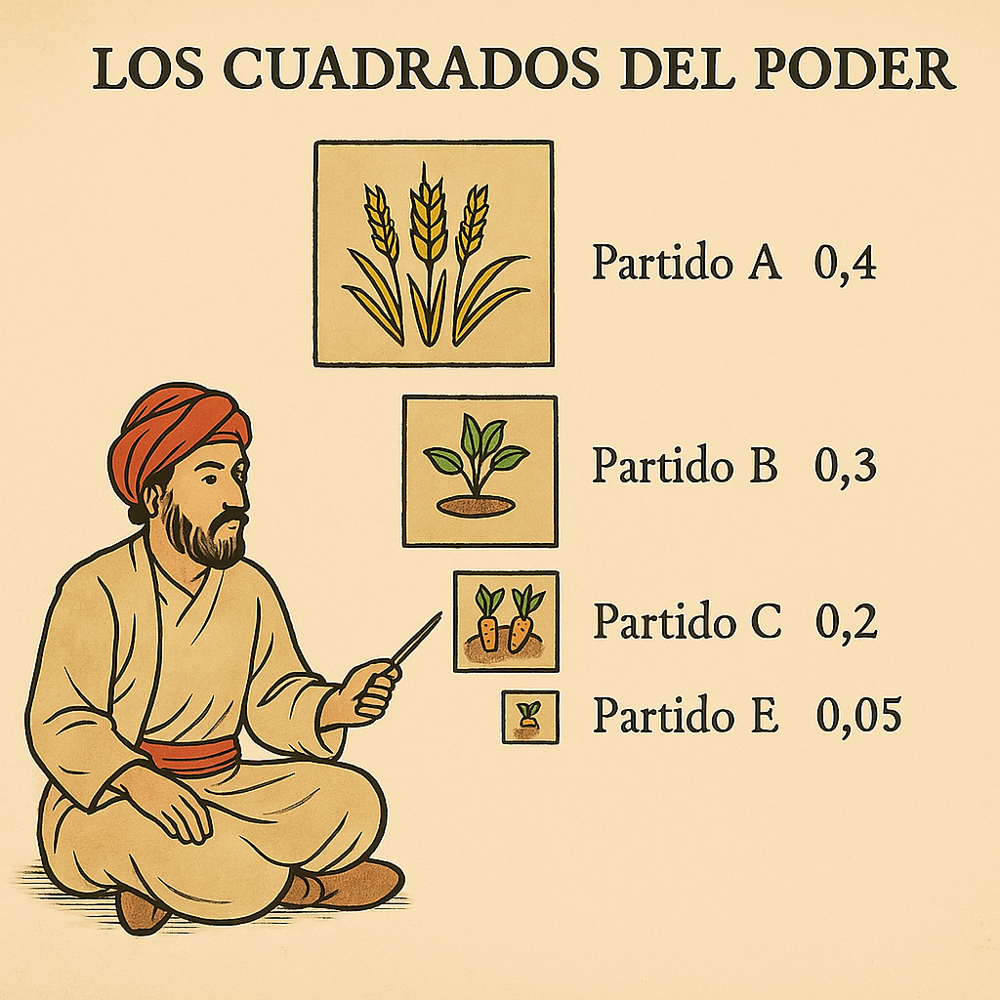

Materiales de Ejemplo

Ejemplo de Pódcast
Pódcast creado con herramientas de IA que veremos en el curso.

Materiales Interactivos
Simuladores, espacios de trabajo enriquecidos con IA, mapas conceptuales y resúmenes.

Feedback Detallado
Retroalimentación personalizada y constructiva para cada estudiante.